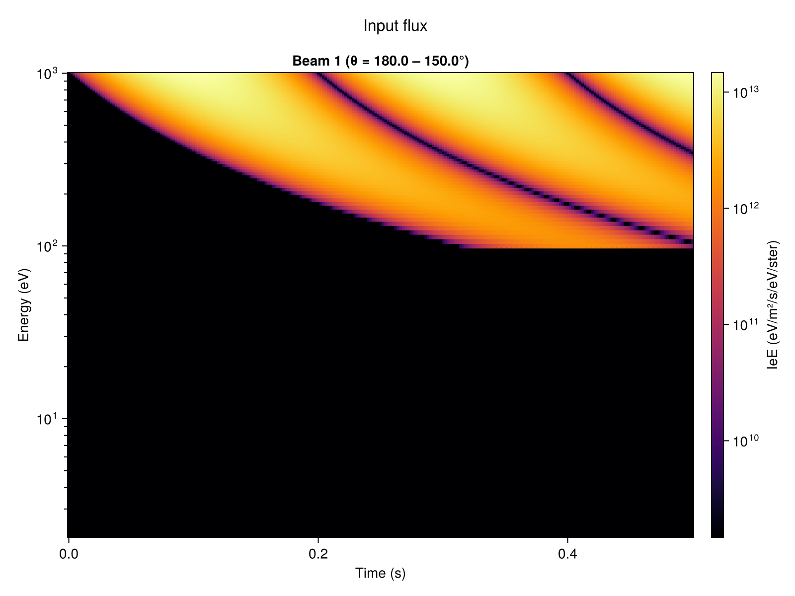
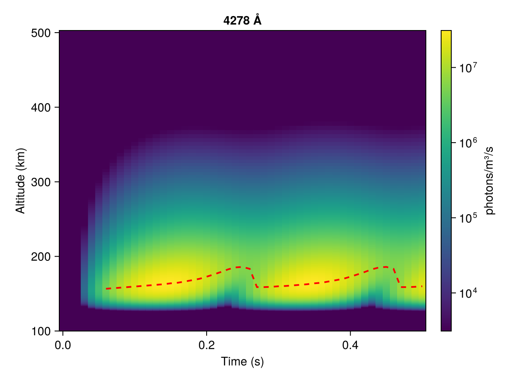
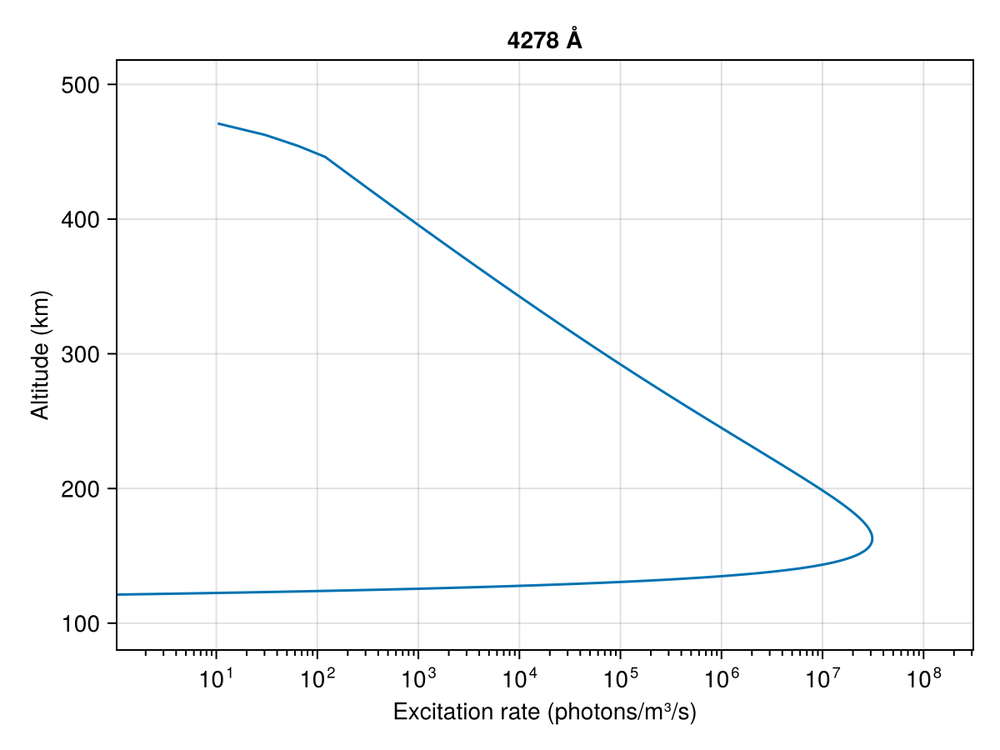
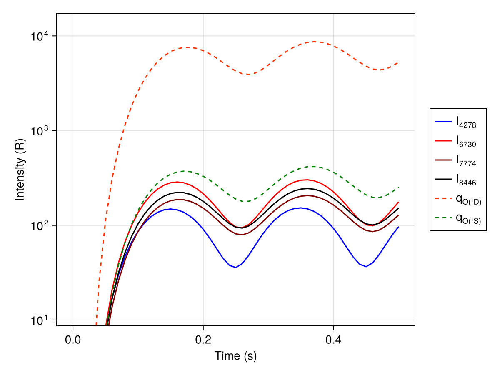

Time-Dependent Simulation
This tutorial walks you through your first AURORA simulation—from setting up the model to running a short time-dependent simulation with a flickering input flux.
Loading AURORA
using AURORAStep 1: Create the atmospheric model
An AuroraModel bundles the numerical grids (altitude, energy, pitch angle), the background ionosphere (neutral and electron densities from MSIS/IRI), and collision cross-section data.
# Find (or generate) MSIS and IRI data files
# Default parameters: VISIONS-2 rocket launch conditions
# (2018-12-07 11:15 UTC, 76°N 5°E)
msis_file = find_msis_file()
iri_file = find_iri_file()
model = AuroraModel(
[100, 500], # altitude limits [km]
180:-30:0, # pitch-angle bin edges [°] → 6 beams
1000, # maximum energy [eV]
msis_file,
iri_file,
13 # magnetic field angle to zenith [°]
)AuroraModel:
├── AltitudeGrid(100.0 - 500.0 km, 401 points)
├── EnergyGrid(2.0538565265003643-1010.0353246912028 eV, 165 bins)
├── PitchAngleGrid(6 beams)
├── ScatteringData(6 beams, 720 directions)
├── Ionosphere(401 altitudes)
├── CrossSectionData(165 energies)
└── B angle to zenith: 13.0°The constructor performs several steps automatically:
- Builds an
AltitudeGridwith fine spacing (~150 m) at the lowest altitudes and coarser spacing above. - Builds an
EnergyGridwith adaptive bin widths (finer at low energies where numerous elastic and inelastic collisions need to be properly resolved). - Builds a
PitchAngleGridfrom the given angle edges. - Loads the neutrals (N₂, O₂, O) densities and temperature from the MSIS file.
- Loads electron densities and temperature from the IRI file.
- Precomputes electron collision cross sections and scattering data.
Step 2: Define the precipitating electron flux
The precipitating electrons are specified by an InputFlux, which combines an energy spectrum with a temporal modulation.
For this first example we use a simple 5 Hz flickering input.
flux = InputFlux(
FlatSpectrum(1e-3; E_min=100),
SinusoidalFlickering(5.0);
beams=1,
z_source=3000.0,
)InputFlux:
├── Spectrum: FlatSpectrum(IeE_tot=0.001 W/m², E_min=100.0 eV)
├── Modulation: SinusoidalFlickering(f=5.0 Hz, amplitude=1.0)
├── Beams: [1]
└── Source altitude: 3000.0 kmEnergy flux and modulation:
FlatSpectrum(1e-3; E_min=100)specifies a total energy flux of 1 mW/m², uniform in energy above 100 eV.SinusoidalFlickering(5.0)applies a 5 Hz sinusoidal modulation with default amplitude 1.0, so the flux oscillates between 0 and 1 mW/m².
See the Input flux tutorial for other spectrum types, modulation types, and more details.
Beam and launch arguments:
- The
beams=1argument means that only the most field-aligned downward-going beam carries the precipitating flux. - The
z_sourceargument sets the altitude from which the electrons are launched. This introduces an energy-dependent travel-time delay, so higher-energy electrons reach the top of the ionosphere before lower-energy ones.
Step 3: Create and run the simulation
Bundle the model and input flux into an AuroraSimulation. For a time-dependent simulation you specify the total duration and the output cadence:
savedir = mkpath(joinpath("data", "my_first_simulation"))
sim = AuroraSimulation(
model,
flux,
0.5, # total simulation time [s]
0.01, # output time step [s] (save every 10 ms)
savedir;
CFL_number=256, # CFL stability parameter (higher → coarser internal stepping)
max_memory_gb=4.0 # memory budget [GB] — controls loop partitioning
)AuroraSimulation (Time-dependent):
├── Model: AuroraModel(AltitudeGrid(100.0 - 500.0 km, 401 points), EnergyGrid(2.0538565265003643-1010.0353246912028 eV, 165 bins))
├── Flux: InputFlux(FlatSpectrum(IeE_tot=0.001 W/m², E_min=100.0 eV), SinusoidalFlickering(f=5.0 Hz, amplitude=1.0), beams=[1])
├── Savedir: data/my_first_simulation
├── t_total: 0.5 s
├── dt request: 0.01 s
├── dt resolved: 0.002 s
├── CFL: 256.0
├── n_loop: 1
├── Cache: not initialized
└── Save flux: trueUnderstanding the time grid
The ResolvedTimeGrid is constructed automatically inside AuroraSimulation. It determines two key quantities:
dt_resolved: the internal time step, chosen to satisfy the CFL condition. This is typically much smaller than the requested outputdt.n_loop: the number of time chunks the simulation is split into. Each chunk is solved independently and its results are saved before moving to the next. This keeps memory usage within the specifiedmax_memory_gbbudget.
You can inspect these:
sim.timeResolvedTimeGrid:
├── Total time: 0.5 s
├── Requested dt: 0.01 s
├── Resolved dt: 0.002 s
├── CFL number: 256.0
├── CFL factor: 5
├── n_loop: 1
├── steps / loop: 251
└── memory budget: 4.0 GBRunning
run!(sim)[ Info: Starting simulation...
Calculating flux for loop 1/1 1%|▎ | ETA: 0:09:32
Calculating flux for loop 1/1 8%|█▉ | ETA: 0:01:27
Calculating flux for loop 1/1 16%|███▌ | ETA: 0:00:49
Calculating flux for loop 1/1 24%|█████▎ | ETA: 0:00:33
Calculating flux for loop 1/1 32%|███████▏ | ETA: 0:00:24
Calculating flux for loop 1/1 41%|████████▉ | ETA: 0:00:18
Calculating flux for loop 1/1 50%|██████████▉ | ETA: 0:00:13
Calculating flux for loop 1/1 59%|█████████████▏ | ETA: 0:00:10
Calculating flux for loop 1/1 68%|███████████████▏ | ETA: 0:00:07
Calculating flux for loop 1/1 85%|██████████████████▊ | ETA: 0:00:03
Calculating flux for loop 1/1 100%|██████████████████████| Time: 0:00:17Internally, AURORA refines the time grid as needed to satisfy the CFL criterion and then sweeps through energies from high to low, advancing the Crank-Nicolson scheme for each energy. The solver loops over time chunks; within each chunk it solves the full energy sweep and saves the results before moving to the next.
Step 4: Post-process
AURORA provides several analysis functions that compute derived quantities from the raw electron flux and save them alongside the simulation output:
make_Ie_top_file(sim) # boundary condition (input flux applied at top)
make_volume_excitation_file(sim) # volumetric excitation rates for optical emissions
make_column_excitation_file(sim) # column-integrated excitation rates
make_current_file(sim) # field-aligned electron currents and energy fluxes
make_heating_rate_file(sim) # electron heating rates
make_psd_file(sim) # electron phase-space density f(E, θ) and F(v∥)Top flux saved in data/my_first_simulation/Ie_top.mat
Volume excitation rates saved in data/my_first_simulation/Qzt_all_L.mat
Column excitation rates saved in data/my_first_simulation/I_lambda_of_t.mat
Currents saved in data/my_first_simulation/J.mat
Heating rates saved in data/my_first_simulation/heating_rate.mat
Converting Ie to PSD.
Processing PSD: 1/1The output files are saved in data/my_first_simulation/:
readdir(savedir)10-element Vector{String}:
"I_lambda_of_t.mat"
"IeFlickering-01.mat"
"Ie_incoming.mat"
"Ie_top.mat"
"J.mat"
"Qzt_all_L.mat"
"heating_rate.mat"
"neutral_atm.mat"
"parameters.txt"
"psd"Step 5: Visualize
AURORA.jl provides helper plotting functions to visualize results through a Makie extension. Install and load a Makie backend to access them (more information about this in Visualization).
Input flux
plot_input can be used to inspect the prescribed input spectrum directly from the simulation object:
using CairoMakie
fig = plot_input(sim)
Volume excitation rate
plot_excitation! can be used to visualize the volume excitation rate for a given emission line over altitude and time.
using CairoMakie
vol = load_volume_excitation(savedir)
fig = Figure()
ax = Axis(fig[1, 1];
xlabel = "Time (s)",
ylabel = "Altitude (km)",
title = "4278 Å")
hm = plot_excitation!(ax, vol; field = :Q4278)
Colorbar(fig[1, 2], hm; label = "photons/m³/s")
fig
Altitude profiles for specific time-steps can also be visualized using the time_index keyword argument.
using CairoMakie
vol = load_volume_excitation(savedir)
fig = Figure()
ax = Axis(fig[1, 1];
xlabel = "Excitation rate (photons/m³/s)",
ylabel = "Altitude (km)",
xscale = log10,
title = "4278 Å")
plot_excitation!(ax, vol; field = :Q4278, time_index = 15)
fig
Column emission intensity
plot_column_excitation! can be used to visualize the column-integrated emission intensities (as would be seen from the ground) for several emission lines (by default 4278 Å, 6730 Å, 7774 Å, 8446 Å, O1D and O1S).
using CairoMakie
col = load_column_excitation(savedir)
fig = Figure()
ax = Axis(fig[1, 1]; xlabel = "Time (s)", ylabel = "Intensity (R)", yscale = log10)
plot_column_excitation!(ax, col)
Legend(fig[1, 2], ax)
fig
Animation
animate_Ie_in_time produces an animation of the electron flux distribution plotted over altitude and energy, with different panels for different pitch-angle streams, stepping over time:
using CairoMakie
animate_Ie_in_time(savedir; framerate = 15)The animation will be saved at animation.mp4.
(1/1) [17:10:22] Load data... create figure... animate.
Saving animation... done!For the full API of all visualization functions, see Visualization.
Next steps
- Steady-state simulation — run the steady-state special case.
- Input flux — explore all spectrum and modulation types.
- Post-processing & analysis — detailed walkthrough of all analysis functions.